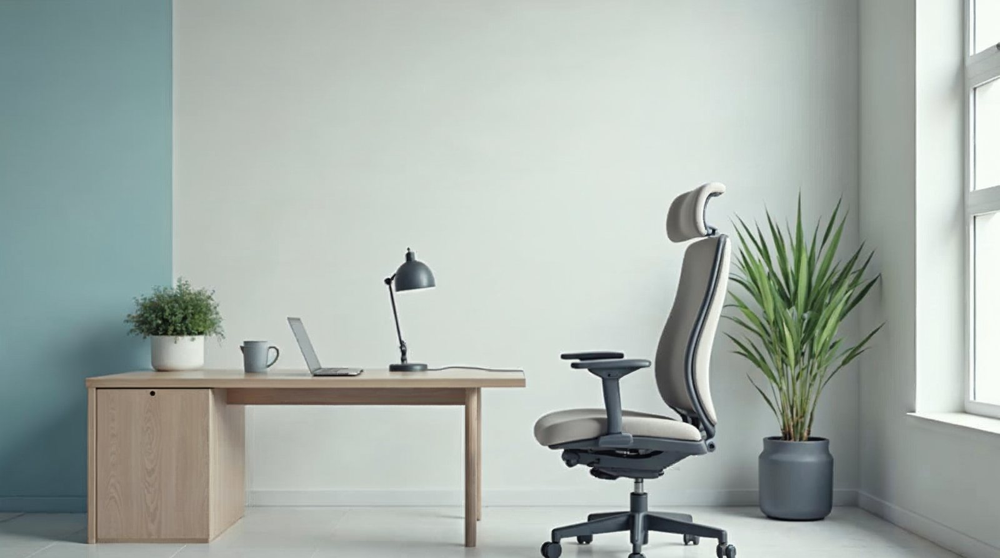
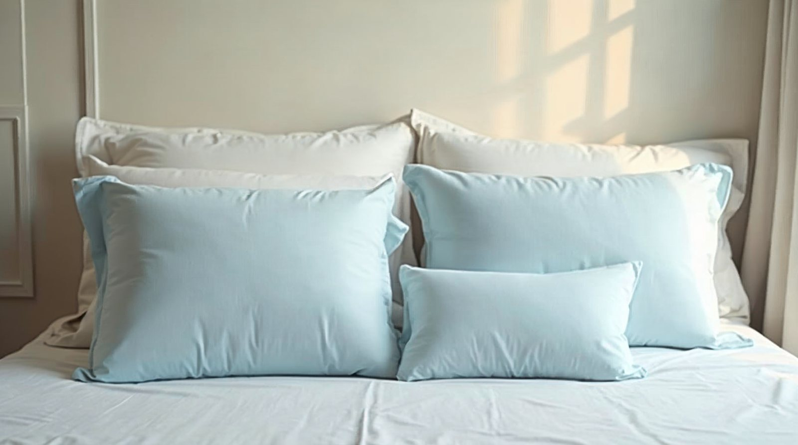
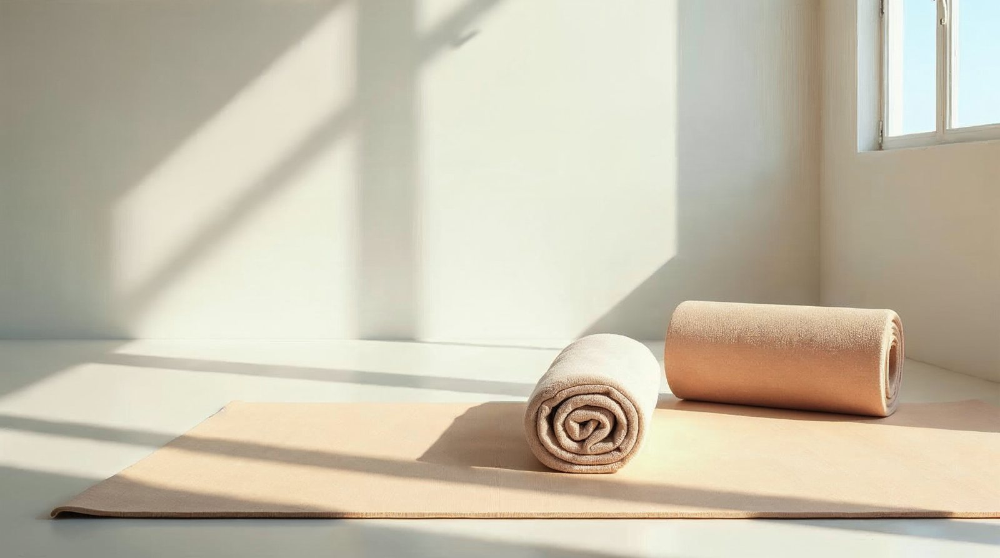
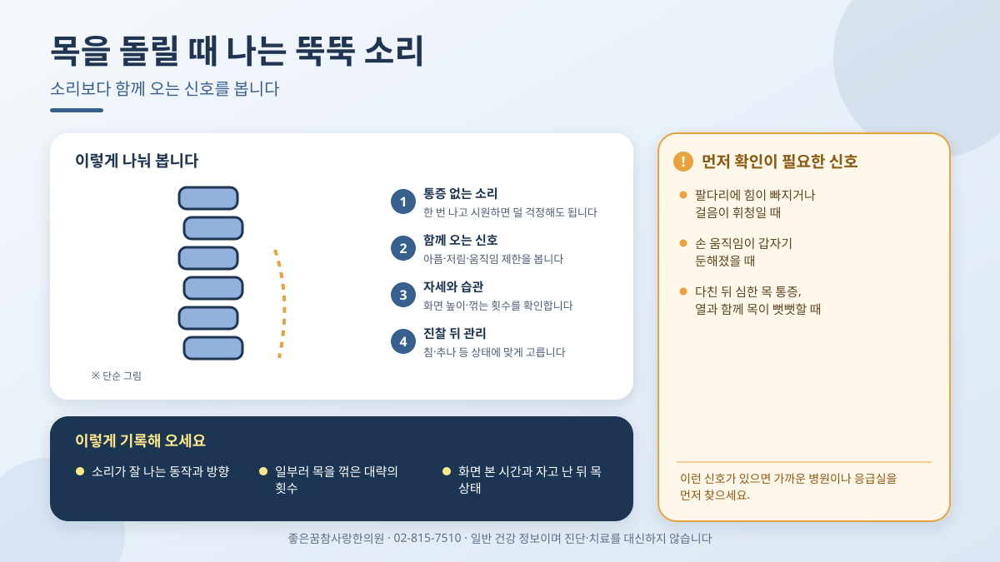

이종호 한의사 감수좋은꿈참사랑한의원 대표원장 (한의사 면허번호 19769)발행 2026-11-26 · 수정 2026-11-26
이 글의 차례
모니터 앞에서 한참 일하다 고개를 좌우로 돌립니다. 뚝, 하고 목에서 소리가 납니다. 시원한 것 같기도 하고, 뭔가 잘못된 건 아닌가 싶기도 합니다. 반대쪽으로 돌리면 또 우두둑 소리가 납니다. 옆자리 동료가 "목에서 무슨 소리야?" 하고 돌아보면 괜히 머쓱해집니다.
진료실에서 목 소리 이야기를 꺼내시는 분들은 대개 두 가지를 걱정하십니다. 하나는 이 소리가 목이 망가지고 있다는 신호가 아닌가 하는 걱정, 다른 하나는 습관처럼 목을 꺾는데 이래도 괜찮은가 하는 걱정입니다. 둘 다 충분히 물어볼 만한 질문입니다.
먼저 안심하셔도 되는 부분부터 말씀드리면, 목에서 나는 소리 가운데 상당수는 통증이나 다른 불편 없이 나는 소리이고, 그 자체로는 크게 걱정하지 않아도 되는 경우가 많습니다. 다만 소리와 함께 오는 신호가 무엇인지에 따라 살펴볼 방향이 달라집니다.
목에서는 왜 소리가 날까요
목뼈는 일곱 개의 작은 뼈가 차곡차곡 쌓여 있고, 뼈와 뼈 사이에는 작은 관절들이 양옆으로 맞물려 있습니다. 이 관절은 얇은 주머니로 싸여 있고, 그 안에는 관절이 부드럽게 미끄러지도록 돕는 액체가 들어 있습니다.
고개를 크게 돌리거나 꺾으면 관절 주머니 안의 압력이 순간적으로 바뀌면서 액체 속에 녹아 있던 기체가 작은 거품처럼 생겼다가 터지는 일이 생깁니다. 손가락 관절을 꺾을 때 나는 '딱' 소리와 비슷한 원리입니다. 한 번 소리가 나면 한동안은 같은 자리에서 다시 소리가 잘 나지 않는 것도 이 때문입니다.
또 다른 소리는 힘줄이나 인대가 뼈의 튀어나온 부분을 넘어가며 미끄러질 때 납니다. 목과 어깨 근육이 굳어 있으면 이런 미끄러짐이 매끄럽지 않아 '툭' 하는 소리가 나기도 합니다. 자세를 바꿔 근육이 풀리면 소리가 줄어드는 경우가 많습니다.
나이가 들며 관절 표면이 조금씩 거칠어지면 고개를 천천히 돌릴 때 '사그락', '드드득' 하는 마찰음이 나기도 합니다. 이런 소리가 뻣뻣함이나 통증과 함께 오래 이어진다면 목 관절의 변화, 흔히 경추증이라 부르는 상태를 함께 살펴봅니다.
괜찮은 소리와 살펴볼 소리는 어떻게 나누나요?
소리 자체보다 소리와 함께 오는 것을 보시면 나누기가 훨씬 쉬워집니다. 아래는 진료실에서 제가 쓰는 대략의 기준입니다.
비교적 걱정을 덜어도 되는 소리는 이런 경우입니다.
- 통증 없이 한 번 '뚝' 나고 나면 오히려 시원한 느낌이 드는 소리
- 오래 같은 자세로 있다가 처음 움직일 때만 나는 소리
- 한 번 나면 한동안 다시 나지 않는 소리
- 소리가 나도 고개 돌리는 범위가 줄지 않는 경우
함께 살펴보면 좋은 소리는 이런 경우입니다.
- 소리가 날 때마다 같은 자리가 아프거나 아픔이 점점 커지는 경우
- 고개를 천천히 돌려도 늘 '드드득' 하는 마찰음이 나며 뻣뻣한 경우
- 소리와 함께 어깨나 팔, 손으로 저림이나 찌릿함이 내려가는 경우
- 소리가 나기 시작한 뒤로 고개를 돌리는 범위가 줄어든 경우
- 넘어지거나 부딪힌 뒤부터 새로 소리가 나기 시작한 경우
앞의 경우라면 소리에 너무 마음 쓰지 않으셔도 됩니다. 뒤의 경우라면 목 관절과 신경, 주변 근육을 한번 살펴보시는 것이 좋습니다.
왜 자꾸 목을 꺾고 싶어질까요
목을 꺾고 나면 순간적으로 시원해집니다. 관절 주변의 압력이 바뀌고, 주변 근육이 잠깐 느슨해지며, 소리 자체가 '풀렸다'는 느낌을 주기 때문입니다. 그래서 목이 무거울 때마다 손이 저절로 턱으로 가는 분이 많습니다.
문제는 그 시원함이 오래가지 않는다는 점입니다. 목이 무거운 이유가 오래 고개를 앞으로 내민 자세, 어깨가 귀 쪽으로 올라간 긴장, 얕은 숨이라면 꺾어서 잠깐 풀어도 같은 자세로 돌아가면 다시 무거워집니다. 그러면 또 꺾게 되고, 하루에도 수십 번 반복하는 습관이 생깁니다.
하루에도 여러 번 손으로 머리를 세게 비틀어 꺾는 습관은 관절과 인대를 지나치게 늘리는 쪽으로 작용할 수 있습니다. 특히 턱을 잡고 끝까지 돌려 억지로 소리를 내는 방식은 피하시길 권합니다. 꺾고 싶은 마음이 들 때는 목이 무거워진 이유를 먼저 들여다보는 것이 오래가는 방법입니다.

소리와 함께 자주 보는 목의 상태
목 소리 때문에 오신 분들을 진찰해 보면, 소리보다 그 주변의 상태가 더 중요한 경우가 많습니다. 자주 만나는 모습은 이렇습니다.
고개가 몸보다 앞으로 나와 있는 자세가 굳어진 경우입니다. 흔히 거북목이나 일자목이라고 부르는 모습으로, 목 뒤 근육은 늘 당겨진 채 버티고 앞쪽 근육은 약해져 있습니다. 이런 상태에서는 고개를 돌릴 때 관절이 고르게 움직이지 못해 소리가 잦아지기 쉽습니다.
어깨와 날개뼈 주변이 굳은 경우도 많습니다. 목을 돌리는 동작에는 어깨와 등 위쪽 근육도 함께 참여하는데, 이 근육들이 굳어 있으면 목만 혼자 애쓰게 됩니다. 그래서 목 소리가 잦은 분들은 어깨를 만져 보면 돌처럼 단단한 경우가 많습니다.
나이가 들며 목뼈와 관절이 조금씩 변한 경우도 있습니다. 이때는 소리와 함께 아침에 목이 뻣뻣하고, 고개를 끝까지 돌리기 어려워지는 흐름이 함께 옵니다. 이런 경우라면 목 관절의 변화를 다룬 글을 함께 읽어 보시면 도움이 됩니다.
교통사고나 넘어짐처럼 목이 크게 흔들린 일을 겪은 뒤에 소리가 새로 생겼다면, 그 일 이후 목이 어떻게 달라졌는지를 따로 여쭙니다. 검사에서 큰 이상이 없다는 말을 들었어도 근육과 인대가 놀라 굳어 있는 경우가 있어서, 움직임과 아픈 자리를 차근차근 확인합니다.

아이와 어르신의 목 소리는 조금 다르게 봅니다
학생들도 목에서 소리가 난다며 오는 경우가 꽤 있습니다. 공부하느라 책상에 고개를 숙이는 시간이 길고, 휴대폰을 보는 시간까지 더해지면 어른과 비슷한 자세가 일찍 굳기 쉽습니다. 친구들 사이에서 목을 꺾어 소리를 내는 것이 장난처럼 번지기도 해서, 그런 습관이 있는지 함께 여쭙니다.
학생이라면 소리보다 책상과 의자 높이, 가방 무게, 잠자는 시간을 먼저 봅니다. 성장기에는 자세 습관이 빠르게 몸에 배기 때문에, 작은 조정으로도 목의 무거움이 달라지는 경우가 많습니다. 공부하는 자리의 사진을 한 장 찍어 오시면 함께 보며 이야기하기 좋습니다. 자주 목이 아프다고 한다면 소아청소년과 진료도 함께 받아 보시도록 안내합니다.
어르신이라면 소리와 함께 뻣뻣함, 고개를 돌리는 범위, 어지럼이 있는지를 더 꼼꼼히 여쭙니다. 고개를 갑자기 크게 돌리거나 젖히는 동작은 어지럼을 부를 수 있어서, 움직임 연습도 작은 범위에서 천천히 시작하시길 권합니다. 혈압이나 신경 쪽으로 걱정되는 부분이 있다면 내과나 신경과 진료와 함께 살핍니다.
먼저 이렇게 여쭙니다
처음 오시면 대략 이런 순서로 여쭙니다. 미리 생각해 오시면 이야기가 훨씬 수월해집니다.
- 소리는 언제부터 났고, 어떤 동작에서 가장 잘 나나요?
- 소리가 날 때 아프거나, 어깨·팔로 저린 느낌이 있나요?
- 일부러 목을 꺾는 습관이 있나요? 하루에 몇 번쯤인가요?
- 하루에 화면을 보는 시간은 어느 정도인가요?
- 베개 높이와 잠자는 자세는 어떠신가요?
- 목이나 어깨를 다친 적, 교통사고를 겪은 적이 있나요?
- 두통이나 어지럼, 눈의 피로가 함께 있나요?
이미 영상 검사를 받으셨다면 결과지와 설명 들으신 내용을 가져와 주세요. 같은 검사를 되풀이하지 않고 지금까지의 흐름을 이어서 살필 수 있습니다.

일상에서 먼저 해 볼 수 있는 것
목 소리를 줄이는 첫걸음은 꺾는 횟수를 줄이고, 목이 무거워지는 이유를 하나씩 덜어 내는 것입니다.
- 꺾고 싶을 때 손으로 비트는 대신, 어깨를 귀 쪽으로 올렸다가 툭 떨어뜨리기를 다섯 번
- 모니터 윗선을 눈높이에 맞추고, 노트북이라면 받침대와 별도 키보드 쓰기
- 휴대폰은 눈높이 가까이 들어 보고, 고개를 숙이는 시간 줄이기
- 50분 일했다면 일어나 가슴을 펴고 숨을 길게 내쉬기
- 베개는 바로 누웠을 때 턱이 들리거나 가슴 쪽으로 숙여지지 않는 높이로
- 무거운 가방은 한쪽 어깨에만 메지 않기
목을 부드럽게 움직이는 연습도 도움이 됩니다. 의자에 바르게 앉아 턱을 살짝 뒤로 당겨 뒷목을 길게 만든 채 5초 머무르기를 열 번 해 보세요. 고개를 숙이는 것이 아니라 턱을 수평으로 밀어 넣는 느낌입니다. 이 동작은 앞으로 나온 고개를 제자리로 돌리는 데 쓰이는 근육을 깨워 줍니다.
고개 돌리기는 끝까지 세게 돌리기보다 편한 범위 안에서 천천히 좌우로 다섯 번씩 움직여 보세요. 소리가 나도 아프지 않다면 괜찮지만, 같은 자리가 아프다면 그 방향은 잠시 쉬어 주시면 됩니다.
따뜻한 수건을 목과 어깨에 10분쯤 올려 두는 것도 굳은 근육을 풀어 주는 데 좋습니다. 샤워할 때 따뜻한 물줄기를 목 뒤에 잠시 맞추고 어깨를 천천히 돌려 보는 것만으로도 저녁의 무거움이 한결 덜해질 수 있습니다.
숨도 함께 살펴보세요. 긴장하면 숨이 얕아지고, 얕은 숨은 목 앞쪽과 어깨 근육을 더 많이 쓰게 만듭니다. 하루 두세 번, 배에 손을 얹고 숨을 천천히 내쉬는 시간을 가지면 목과 어깨에 들어간 힘이 조금씩 빠지는 것을 느끼실 수 있습니다.
한의원에서 함께 살필 수 있는 경우
- 목 소리와 함께 뒷목과 어깨가 늘 뻣뻣하고 무거운 경우
- 목을 꺾지 않으면 답답해서 하루에도 여러 번 꺾게 되는 경우
- 고개를 돌릴 때 특정 방향이 걸리고 아픈 경우
- 목이 무거우면서 두통이나 눈의 피로, 잠의 불편이 함께 있는 경우
- 오래 앉아 일하며 자세가 앞으로 쏠려 있다는 이야기를 자주 듣는 경우
좋은꿈참사랑한의원에 오시면 먼저 아래 '먼저 확인이 필요한' 신호가 없는지부터 봅니다. 그다음 맥을 짚고, 목과 어깨, 등 위쪽을 직접 만져 굳은 자리를 찾으며, 고개를 여러 방향으로 움직여 걸리는 곳을 확인합니다.
진찰한 내용을 바탕으로 자세와 생활에서 바꿔 볼 것을 먼저 정하고, 침 치료와 추나 가운데 지금 상태에 맞는 것을 고릅니다. 추나는 목과 등, 골반이 어떻게 움직이는지 먼저 보고, 강한 교정이 부담스러운 분께는 부드러운 기법으로 세기를 맞춥니다.
목과 어깨 근육의 특정 자리가 오래 아프다면 필요하다고 판단될 때 초음파로 확인하고 약침을 고려하기도 합니다. 한약을 상의하는 경우에는 드시는 약을 모두 확인한 뒤 신중하게 정합니다.
팔이나 손으로 저림이 내려가거나 힘이 빠지는 느낌이 있다면 정형외과나 신경외과에서 영상 검사를 받아 보시도록 안내합니다. 목디스크나 신경 눌림이 있는지는 영상과 신경 검사로 판단하는 부분이고, 한의원 진료는 그 결과와 나란히 걷는 길입니다.
이렇게 기록해 오시면 상담이 쉬워집니다
목 소리는 자세와 하루의 긴장에 따라 날마다 달라집니다. 일주일 정도만 간단히 적어 보세요.
- 소리가 잘 나는 동작과 방향
- 소리와 함께 아픔이나 저림이 있었는지
- 일부러 목을 꺾은 대략의 횟수
- 화면을 본 시간과 쉬는 간격
- 잠든 시각과 베개, 자고 일어났을 때 목 상태
- 두통이나 눈의 피로가 있었던 날
기록을 모아 보면 어떤 날, 어떤 자세에서 목이 무거워지고 꺾고 싶어지는지가 보이기 시작합니다. 그 연결이 보이면 바꿀 것이 분명해집니다.
소리보다 목이 보내는 신호를 들어 주세요
목에서 나는 소리는 대개 몸이 오래 같은 자세로 버텼다는 작은 알림입니다. 소리를 없애려 애쓰기보다, 그 소리가 날 만큼 목이 무거워진 이유를 함께 찾는 쪽이 더 편한 길입니다.
오늘은 꺾고 싶을 때 손을 턱에 대는 대신 어깨를 한 번 올렸다 떨어뜨려 보세요. 그리고 모니터 높이를 한 번만 확인해 보세요. 다음에 오시면 일주일 동안의 기록을 함께 펼쳐 보겠습니다.
이런 증상은 먼저 확인이 필요합니다
- 목 소리와 함께 팔다리에 힘이 빠지거나, 걸음이 휘청이고 단추 잠그기처럼 손 움직임이 둔해진 경우
- 넘어지거나 부딪힌 뒤 목이 심하게 아프거나, 열이 나면서 고개를 숙이기 어려울 만큼 목이 뻣뻣한 경우
이런 신호가 있으면 한의원보다 가까운 병원이나 응급실을 먼저 찾으세요.
함께 읽으면 좋은 글
- 목을 돌릴 때마다 우두둑 소리가 나고 뻣뻣한 목 퇴행(경추증)은 어떻게 살피나요?
- 거북목과 일자목은 추나로 어떻게 살피나요?
- 목에서 팔로 저림이 내려올 때(목디스크 의심)는 어떤 점을 먼저 확인하나요?
- 무릎에서 뚝뚝, 우두둑 소리가 날 때는 괜찮은 소리와 살펴볼 소리를 어떻게 나누나요?
- 거북목과 라운드숄더는 집에서 어떤 스트레칭을 해 볼 수 있나요?

여쭙는 것
- 소리는 언제부터 났고, 어떤 동작에서 가장 잘 나나요?
- 소리가 날 때 아프거나, 어깨·팔로 저린 느낌이 있나요?
- 일부러 목을 꺾는 습관이 있나요? 하루에 몇 번쯤인가요?
생활에서 해 볼 것
- 꺾고 싶을 때 손으로 비트는 대신, 어깨를 귀 쪽으로 올렸다가 툭 떨어뜨리기를 다섯 번
- 모니터 윗선을 눈높이에 맞추고, 노트북이라면 받침대와 별도 키보드 쓰기
- 휴대폰은 눈높이 가까이 들어 보고, 고개를 숙이는 시간 줄이기
한의원에서 함께 살필 것
- 목 소리와 함께 뒷목과 어깨가 늘 뻣뻣하고 무거운 경우
- 목을 꺾지 않으면 답답해서 하루에도 여러 번 꺾게 되는 경우
- 고개를 돌릴 때 특정 방향이 걸리고 아픈 경우
먼저 확인이 필요한 신호
- 목 소리와 함께 팔다리에 힘이 빠지거나, 걸음이 휘청이고 단추 잠그기처럼 손 움직임…
- 넘어지거나 부딪힌 뒤 목이 심하게 아프거나, 열이 나면서 고개를 숙이기 어려울 만큼…
한눈에 보는 표
| 구분 | 핵심 |
|---|---|
| 여쭙는 것 | 소리는 언제부터 났고, 어떤 동작에서 가장 잘 나나요? 소리가 날 때 아프거나, 어깨·팔로 저린 느낌이 있나요? |
| 생활에서 해 볼 것 | 꺾고 싶을 때 손으로 비트는 대신, 어깨를 귀 쪽으로 올렸다가 툭 떨어뜨리기를 다섯 번 모니터 윗선을 눈높이에 맞추고, 노트북이라면 받침대와 별도 키보드 쓰기 |
| 한의원에서 함께 살필 것 | 목 소리와 함께 뒷목과 어깨가 늘 뻣뻣하고 무거운 경우 목을 꺾지 않으면 답답해서 하루에도 여러 번 꺾게 되는 경우 |
| 먼저 확인이 필요한 신호 | 목 소리와 함께 팔다리에 힘이 빠지거나, 걸음이 휘청이고 단추 잠그기처럼 손 움직임이 둔해진 경우 넘어지거나 부딪힌 뒤 목이 심하게 아프거나, 열이 나면서 고개를 숙이기 어려울 만큼 목이 뻣뻣한 경우 |
자주 묻는 질문
목에서 소리가 나는 것 자체가 나쁜 건가요?
통증이나 저림 없이 가끔 나는 소리는 관절 속 압력이 바뀌며 나는 경우가 많아 크게 걱정하지 않으셔도 됩니다. 소리와 함께 아픔이나 저림, 움직임 제한이 있다면 살펴보시는 것이 좋습니다.
목을 꺾는 습관은 어떻게 고치나요?
꺾고 싶을 때 대신할 동작을 정해 두시면 도움이 됩니다. 어깨를 올렸다 떨어뜨리기, 턱 당기기, 숨 길게 내쉬기처럼 목을 비틀지 않는 동작으로 바꿔 보세요.
추나를 받으면 목에서 소리가 나나요?
기법에 따라 소리가 날 때도 있고 나지 않을 때도 있습니다. 소리를 내는 것이 목적이 아니라 관절과 근육의 움직임을 살피는 것이 목적이며, 부담스러우신 분께는 부드러운 기법으로 맞춥니다.
베개를 바꾸면 소리가 줄어드나요?
베개가 너무 높거나 낮아 자고 일어나면 목이 뻣뻣하다면 바꿔 볼 만합니다. 바로 누웠을 때 얼굴이 천장을 편하게 보는 높이가 대략의 기준입니다.
영상 검사는 꼭 받아야 하나요?
통증 없는 소리만 있다면 대개 먼저 진찰로 살펴봅니다. 팔 저림이나 힘 빠짐, 다친 뒤 생긴 소리라면 정형외과나 신경외과에서 영상 검사를 받아 보시도록 안내합니다.
좋은꿈참사랑한의원은 재진 때 지난번 이야기부터 이어서 여쭙니다. 진료시간과 예약은 오시는 길에서 확인하세요.
어디서 상담받을 수 있나요?
좋은꿈참사랑한의원은 서울 동작구 만양로2길 2 신성빌딩 3층·5층(서울 동작구 상도동, 7호선 상도역 3번 출구 근처)에 있습니다. 한의사 3명(이종호 대표원장, 조영기 수석진료원장, 정원영 진료원장)이 진료합니다. 진료시간은 평일 09:30~20:00(점심 13:00~14:00), 토·일·공휴일 09:30~15:00이며, 방문 전 전화로 확인을 권합니다. 예약은 네이버 예약, 카카오톡 상담, 전화 02-815-7510로 받습니다.
이 글은 일반적인 건강 정보이며 개인의 진단이나 치료를 대신하지 않습니다. 증상이 있거나 복용 중인 약이 있다면 진료를 통해 확인하세요. 치료 효과는 개인마다 다를 수 있습니다.
작성 기준: 일반적으로 알려져 있는 건강 정보를 참고해 정리했습니다(대표원장 감수). 증상 기록은 1~2주 동안 하루 1회, 비슷한 시간에 적어 오시면 지난 상태와 비교하기 쉽습니다.